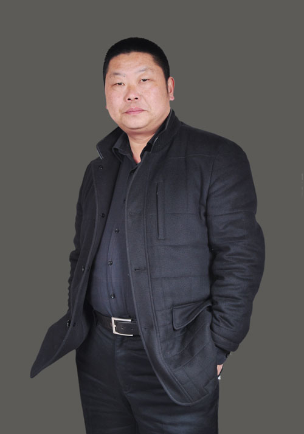
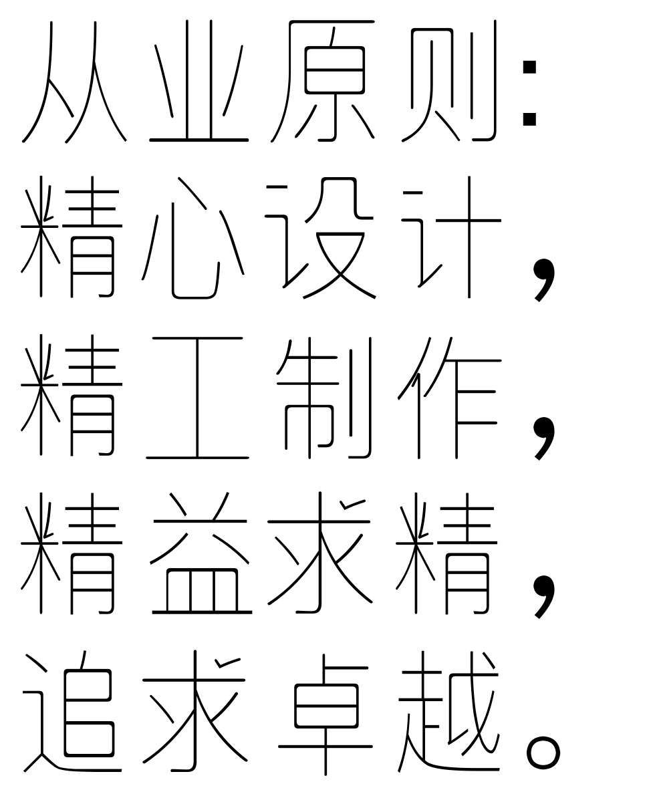

Team简介
北京楚风建筑装饰工程有限公司是一家集设计、建筑、装饰于一体的专业公司。 公司经营以北京为中心，辐射珠海、深圳、三亚、武汉、荆州等城市。目前公司拥有专业设计团队和一百多人的施工队伍。
公司自2004年成立以来，有幸与数家一流的国际设计公司合作，目前在北京零能源环保建筑的设计和建筑施工方面一直居于领先地位，先后在北京完成了国际学校、幼儿园、培训学校、家庭酒店、高端四合院、奢华别墅、公寓、驻华大使馆、展销中心、高端汽车展厅、抗震加固工程、体育馆、跑道、专业舞台、停车场等项目的设计和施工，赢得了客户及相关合作单位的一致赞誉。
公司坚持以“规范做事、诚信为本、凭专业赢得市场、以口碑赢得客户”的原则为企业文化发展观，通过标准化的管理以及规范的施工流程，赢得了客户的信赖。公司强调对员工进行定期培训，培养了一批掌握德国建筑施工规范和施工流程，专业素质优良、富有责任心的施工团队。公司在设计、施工、选材方面的管理坚持做到品牌化和环保化。